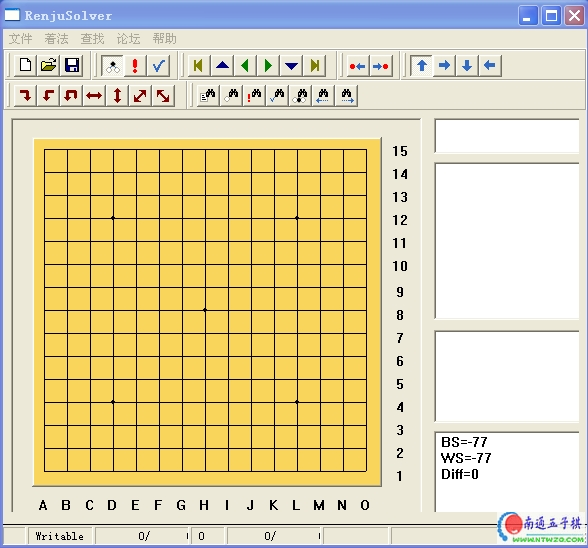
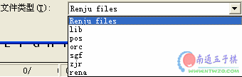

爱五子棋打谱软件【完全替代rena和renlib软件】
#1 爱五子棋打谱软件【完全替代rena和renlib软件】 作者：有志青年 发表时间：2006-9-7 9:31:12
最新版本见：爱五子棋打谱软件2.2版本发布，可计算VCF，免杀
首先看几个截图，一定让你扔掉rena和renlib。我可以保证！
〔爱五子棋网站和作者定制独家授权发布版本，可以保存棋谱！谢绝其他网站转载〕
定制版本，不是测试版！


替代renlib的功能我就不介绍了。特色功能如下：
１、如何读取网上的互动谱
找到网上互动谱页面，鼠标右键点击，选择察看源文件，查找“78”会看到下面一段代码
<APPLET height=354 hspace=3 width=330 align=center code=Rena.class>
<param name="data" value="780069007a00890098008640">
</APPLET><br>
复制其中的：780069007a00890098008640
打开论坛发谱器，选择“论坛，输入rena代码”
２、如何发布网络互动谱
首先是你打谱，然后选择“论坛，rena ubb 代码”之后不需要说明了吧
３、如何将南通五子棋慢棋对局保存到本地
到南通五子棋慢棋系统中复制棋谱信息
打开软件，选择“论坛，输入南通连珠代码”
４、如何察看浙江和ORC教室讲课内容
直接打开
5、如何在棋盘上插入字符标识？
按住ctrl键，同时用鼠标点击落点，输入字符标识。
本站就软件的使用开专帖讨论： ShowPost.asp?ThreadID=1353
本地下载地址：
最新更新：
1、原打谱软件有时间限制，大约一小时后会自动关闭，已经修正【待各位使用者审查】
2、开放了保存分支功能，一个多分支棋谱，点击查找->着法序号->不填写，点击确定->点击查找->分支保存。【哈哈，好强的功能哟】
3、增加读取sfg棋谱信息功能，今后打开爱五子棋网、ORC、浙江连珠等提供的五子棋谱时可以详细看到对局者信息了。【效果见截图】
4、此软件能开RENLIB开的谱的3-4倍大的谱。具体和机器内存有关【同样的机器，用此软件可以打开的谱，renlib不一定打的开】
5、更多特色功能请各位自己摸索了哟【还有很多好功能，如保存网上的互动谱等】
［此帖子已被 有志青年 在 2011-10-31 11:11:30 编辑过］
#2 Re:南通五子棋独家授权发布“论坛发谱器” 作者：longfx 发表时间：2006-9-7 10:38:59
可以保存棋谱的话,那是非常好用的了.
最起码可以把浙江教室和ORC上课内容直接记成笔记形式,非常感谢
#3 Re:南通五子棋打谱软件【完全替代rena和renlib软件】 作者：江南新绿 发表时间：2006-9-8 11:07:26
支持一下
#4 Re:南通五子棋打谱软件【完全替代rena和renlib软件】 作者：xr__ 发表时间：2006-9-9 23:54:20
界面和功能很漂亮，好象那个只读和改写按扭不起作用，一不小心就把谱改了还有，原来好象有个平移的功能找不到了！
#5 Re:南通五子棋打谱软件【完全替代rena和renlib软件】 作者：寂静的海岛 发表时间：2006-9-11 0:25:26
强，连珠软件的新秀，不可不看。#6 Re:Re:南通五子棋打谱软件【完全替代rena和renlib软件】 作者：星尘 发表时间：2006-9-15 16:24:05
引用：不好意思，会用了，和renlib一样，Ctrl＋左键会弹出一个窗口，可以输汉字。
原文由 星尘 发表于 2006-9-14 16:51:48 :
怎么在棋盘上插入字符标识？没找到这个功能。rena可以。而且帮助连接的是英文网站(http://math.temple.edu/~wen/renju/)，看不明白。
#7 Re:南通五子棋打谱软件【完全替代rena和renlib软件】 作者：uniwin 发表时间：2006-9-17 14:37:33
有志青年您好：
最近正在使用您开发的“南通五子棋打谱软件”2006年9月5日的版本，经过试用，发现确实极大地方便了动态棋谱地转换，但在使用时发现了一个问题无法解决，请予以答复。
将互动棋谱中的棋谱代码输入“南通五子棋打谱软件”时，运行主菜单中的“论坛－输入rena代码”，然后将棋谱文本Kopy进去，此时发现如果文本超过30,000个字符，则超过的部分无法完整显示，请解决，谢谢您的辛苦劳动和无私精神。
已经发送邮件到RenjuSolver@gmail.com传给您一个文本附件，以供测试之用。
我的邮箱uniwinjz@163.com
#8 Re:南通五子棋打谱软件【完全替代rena和renlib软件】 作者：jample 发表时间：2006-9-18 20:08:25
#9 Re:南通五子棋打谱软件【完全替代rena和renlib软件】 作者：大愚弱智 发表时间：2006-11-13 10:31:13
#10 Re:南通五子棋打谱软件【完全替代rena和renlib软件】 作者：thl500 发表时间：2006-11-16 9:13:11
感谢楼主!
#11 Re:南通五子棋打谱软件【完全替代rena和renlib软件】 作者：单眼皮女生A 发表时间：2006-11-25 23:45:01
与五子棋打谱软件xfive有何不同,可以下吗#12 Re:南通五子棋打谱软件【完全替代rena和renlib软件】 作者：鹤舞九天 发表时间：2006-11-26 19:17:47
我正需要这个,谢谢啦.#13 Re:南通五子棋打谱软件【完全替代rena和renlib软件】 作者：阿晕 发表时间：2006-11-26 22:07:41
看看这个版本和我的区别#14 Re:南通五子棋打谱软件【完全替代rena和renlib软件】 作者：宝齐 发表时间：2006-11-28 22:13:09
我要下载，谢谢~~~#15 Re:南通五子棋打谱软件【完全替代rena和renlib软件】 作者：qwert- 发表时间：2006-11-29 9:58:22
感谢楼主!
盼望得到。
#16 Re:Re:南通五子棋独家授权发布“论坛发谱器” 作者：晕了 发表时间：2006-12-2 9:06:59
应该不错，功能强大#17 Re:Re:南通五子棋独家授权发布“论坛发谱器” 作者：hezhen 发表时间：2006-12-6 14:36:46
好，我想要这个软件#18 Re:南通五子棋打谱软件【完全替代rena和renlib软件】 作者：emosi 发表时间：2006-12-12 18:03:21
可以保存棋谱的话,那是非常好用的了.
#19 Re:南通五子棋打谱软件【完全替代rena和renlib软件】 作者：恒斌 发表时间：2006-12-19 13:29:46
谢谢楼主!
#20 Re:南通五子棋打谱软件【完全替代rena和renlib软件】 作者：五子棋先生呢 发表时间：2006-12-19 17:59:55
好，不知怎样下载
#21 Re:南通五子棋打谱软件【完全替代rena和renlib软件】 作者：missdm 发表时间：2006-12-20 22:38:18
太好了 信心又来了
#22 Re:南通五子棋打谱软件【完全替代rena和renlib软件】 作者：3401uu 发表时间：2006-12-22 18:19:17
可以保存棋谱的话,那是非常好用的了.
最起码可以把浙江教室和ORC上课内容直接记成笔记形式,非常感谢
#23 Re:南通五子棋打谱软件【完全替代rena和renlib软件】 作者：518599 发表时间：2006-12-23 8:36:03
感谢楼主!#24 Re:南通五子棋打谱软件【完全替代rena和renlib软件】 作者：梓名 发表时间：2006-12-23 22:42:24
果然是好软件啊，顶
#25 Re:南通五子棋打谱软件【完全替代rena和renlib软件】 作者：特爱小乌龟 发表时间：2006-12-24 12:11:02
太感谢你了
#26 Re:南通五子棋打谱软件【完全替代rena和renlib软件】 作者：lizhe 发表时间：2006-12-26 22:24:10
谢谢楼主，总算找到一个合适的软件#27 Re:南通五子棋打谱软件【完全替代rena和renlib软件】 作者：cjlahy 发表时间：2006-12-29 0:07:43
就在找他了
#28 Re:南通五子棋打谱软件【完全替代rena和renlib软件】 作者：叶长青 发表时间：2006-12-29 9:28:39
好冬冬，我找了五天才找到，相见恨晚啊#29 Re:南通五子棋打谱软件【完全替代rena和renlib软件】 作者：曾西 发表时间：2006-12-29 20:29:28
非常感谢呢个有这样的软件
#30 Re:南通五子棋打谱软件【完全替代rena和renlib软件】 作者：笑遥王 发表时间：2006-12-30 17:37:47
可以把浙江教室和ORC上课内容直接记成笔记形式,非常感谢#31 Re:南通五子棋打谱软件【完全替代rena和renlib软件】 作者：天外天 发表时间：2006-12-30 23:46:34
一直都想见识的软件
#32 Re:南通五子棋打谱软件【完全替代rena和renlib软件】 作者：花火 发表时间：2007-1-1 7:00:15
一定让我扔掉rena和renlib。不太可能吧？#33 Re:南通五子棋打谱软件【完全替代rena和renlib软件】 作者：anan 发表时间：2007-1-1 19:25:59
感谢老板,以前能比renlib还好用么?
#34 Re:南通五子棋打谱软件【完全替代rena和renlib软件】 作者：金福 发表时间：2007-1-7 14:03:20
新来的，向你们学习啊！#35 Re:南通五子棋打谱软件【完全替代rena和renlib软件】 作者：A三无 发表时间：2007-1-7 19:13:43
以前用过.8错
#36 Re:南通五子棋打谱软件【完全替代rena和renlib软件】 作者：小阿臭 发表时间：2007-1-12 19:39:51
背景颜色很好啊，很清新，喜欢#37 Re:南通五子棋打谱软件【完全替代rena和renlib软件】 作者：小阿臭 发表时间：2007-1-12 20:00:04
非常好用谢谢，我想问一下怎么能增加我的金币呢？
#38 Re:南通五子棋打谱软件【完全替代rena和renlib软件】 作者：石头 发表时间：2007-1-14 12:22:24
好久8来咯，刚看到，是什么东西偶瞄瞄！
#39 Re:南通五子棋打谱软件【完全替代rena和renlib软件】 作者：xuemoh 发表时间：2007-1-15 5:45:09
可以保存棋谱的话,那是非常好用的了#40 Re:南通五子棋打谱软件【完全替代rena和renlib软件】 作者：【太极】长缨 发表时间：2007-1-15 21:20:14
第一次想研究五子棋，等研究成高手，楼主的恩德将没此难忘
#41 Re:南通五子棋打谱软件【完全替代rena和renlib软件】 作者：超级塞亚人 发表时间：2007-1-18 20:01:52
有那么好的软件当然要下了，楼主最好能再提供一些经典的五子棋高手对局的棋谱。热切期盼中
#42 Re:南通五子棋打谱软件【完全替代rena和renlib软件】 作者：菏香袭幽梦 发表时间：2007-1-23 19:45:42
用起来不会太复杂吧..偶笨,太复杂的看不懂的说...#43 Re:南通五子棋打谱软件【完全替代rena和renlib软件】 作者：顺风 发表时间：2007-1-24 13:22:08
找了个妖刀总谱，不知道能不能打开。#44 Re:南通五子棋打谱软件【完全替代rena和renlib软件】 作者：顺风 发表时间：2007-1-25 11:55:31
提个建议，能不能增加一种棋谱的格式，就是*.gbd的文件，是现在泡泡游戏里五子棋导出的棋谱。#45 Re:南通五子棋打谱软件【完全替代rena和renlib软件】 作者：子非鱼 发表时间：2007-1-28 9:18:55
可以保存棋谱的话,那是非常好用的了
南通五子棋打谱软件
#46 Re:南通五子棋打谱软件【完全替代rena和renlib软件】 作者：维克多 发表时间：2007-1-29 13:01:30
好极了
#47 Re:南通五子棋打谱软件【完全替代rena和renlib软件】 作者：cc321 发表时间：2007-1-29 20:21:48
谢谢！
#48 Re:南通五子棋打谱软件【完全替代rena和renlib软件】 作者：南通小小包 发表时间：2007-1-29 20:39:30
看看
#49 Re:南通五子棋打谱软件【完全替代rena和renlib软件】 作者：友善 发表时间：2007-1-30 0:11:04
我来看看 和其他的软件有什么区别#50 Re:南通五子棋打谱软件【完全替代rena和renlib软件】 作者：海风月影 发表时间：2007-2-1 21:43:46
不错，好东西，谢谢楼主#51 Re:南通五子棋打谱软件【完全替代rena和renlib软件】 作者：连珠战神 发表时间：2007-2-3 16:01:10
太好了，谢谢#52 Re:南通五子棋打谱软件【完全替代rena和renlib软件】 作者：A三无 发表时间：2007-2-7 8:43:00
先谢谢了.软件真的很好用.不过有一个问题,请帮忙解决一下.软件在使用时经常会出现"产品未注册"的提示,然后会自动关闭.#53 Re:南通五子棋打谱软件【完全替代rena和renlib软件】 作者：和棋 发表时间：2007-2-23 0:19:23
还要注册么#54 Re:南通五子棋打谱软件【完全替代rena和renlib软件】 作者：早说 发表时间：2007-3-2 13:05:01
顶了
百度五子棋吧的朋友介绍的啊，看看。。
从未用过打谱软件
#55 Re:南通五子棋打谱软件【完全替代rena和renlib软件】 作者：gdqb 发表时间：2007-3-3 14:34:14
感谢#56 Re:南通五子棋打谱软件【完全替代rena和renlib软件】 作者：u56805 发表时间：2007-3-4 11:06:46
不会玩
#57 Re:南通五子棋打谱软件【完全替代rena和renlib软件】 作者：耘水 发表时间：2007-3-5 19:12:48
想学五子棋，听说不错啊。#58 Re:南通五子棋打谱软件【完全替代rena和renlib软件】 作者：网尘 发表时间：2007-3-26 15:20:25
第一次下载打谱软件.谁能告诉我怎么用.谢谢#59 Re:南通五子棋打谱软件【完全替代rena和renlib软件】 作者：行云流水 发表时间：2007-3-27 13:34:08
象此类实用软件倒不失为一个开发的方向。中国人还是要有中国人自己的软件。
#60 Re:南通五子棋打谱软件【完全替代rena和renlib软件】 作者：mers 发表时间：2007-3-27 16:14:17
第一次看到...都说好..先用用#61 Re:南通五子棋打谱软件【完全替代rena和renlib软件】 作者：游客 发表时间：2007-3-30 23:57:36
thank you very much#62 Re:南通五子棋打谱软件【完全替代rena和renlib软件】 作者：zanlin 发表时间：2007-4-8 19:46:08
好的软件利于学习
#63 Re:南通五子棋打谱软件【完全替代rena和renlib软件】 作者：黑白之道 发表时间：2007-4-30 15:34:16
支持一下#64 Re:Re:南通五子棋独家授权发布“论坛发谱器” 作者：xzl001 发表时间：2007-5-4 2:14:04
可以保存棋谱的话,那是非常好用的了#65 Re:南通五子棋打谱软件【完全替代rena和renlib软件】 作者：伊莉贝尔 发表时间：2007-5-8 21:03:23
非常感谢#66 Re:爱五子棋打谱软件【完全替代rena和renlib软件】 作者：郎之喜 发表时间：2007-8-16 13:19:02
 真的很好用，谢谢
真的很好用，谢谢
#67 Re:爱五子棋打谱软件【完全替代rena和renlib软件】 作者：caike 发表时间：2007-9-19 22:18:27
正需要这个！界面不错，谢谢！#68 Re:爱五子棋打谱软件【完全替代rena和renlib软件】 作者：王四海 发表时间：2007-10-27 16:27:42
连珠终结者的一半#69 Re:爱五子棋打谱软件【完全替代rena和renlib软件】 作者：颠倒小生 发表时间：2007-10-28 21:52:46
中文版的吗？#70 Re:爱五子棋打谱软件【完全替代rena和renlib软件】 作者：火来烧 发表时间：2007-11-3 13:26:11
我想下载^^#71 Re:爱五子棋打谱软件【完全替代rena和renlib软件】 作者：生命围城 发表时间：2007-11-6 22:02:07
正需要这个软件来学习#72 Re:爱五子棋打谱软件【完全替代rena和renlib软件】 作者：易之道 发表时间：2007-11-17 14:44:25
似乎不支持LittleGolem中Gomoku的TXT格式棋谱
#73 Re:爱五子棋打谱软件【完全替代rena和renlib软件】 作者：leehee 发表时间：2007-11-30 19:45:38
顶下
我是个初学者,我的空间是http://hi.baidu.com/leehee
#74 Re:爱五子棋打谱软件【完全替代rena和renlib软件】 作者：秘密 发表时间：2008-5-9 17:01:05
感谢版主用心
下來學習
#75 Re:爱五子棋打谱软件【完全替代rena和renlib软件】 作者：闫荣辉 发表时间：2008-6-16 18:06:35
 支持支持！不过好像少点计算功能！有就更好啦！
支持支持！不过好像少点计算功能！有就更好啦！
#76 Re:爱五子棋打谱软件【完全替代rena和renlib软件】 作者：混凝土 发表时间：2008-8-21 15:44:15
谢谢，非常的喜欢，终于可以在家慢慢的推演下法了#77 Re:爱五子棋打谱软件【完全替代rena和renlib软件】 作者：草莓 发表时间：2008-10-11 14:20:12
感谢楼主!
#78 Re:爱五子棋打谱软件【完全替代rena和renlib软件】 作者：我想学棋 发表时间：2008-11-6 17:09:03
谢谢老师
#79 Re:爱五子棋打谱软件【完全替代rena和renlib软件】 作者：手术 发表时间：2008-11-18 0:58:40
谢谢，我也享受一下。
#80 Re:爱五子棋打谱软件【完全替代rena和renlib软件】 作者：刘初学五子 发表时间：2008-12-19 15:22:03
有志青年：
怎样才能增加威望值，我想下载棋谱！初学啊！
#81 Re:爱五子棋打谱软件【完全替代rena和renlib软件】 作者：旖旎阳光 发表时间：2009-1-7 15:11:05
用过，确实不错@！#82 Re:爱五子棋打谱软件【完全替代rena和renlib软件】 作者：阿歌 发表时间：2009-2-4 13:54:15
先收藏再慢慢学习。
#83 Re:爱五子棋打谱软件【完全替代rena和renlib软件】 作者：陈习龙 发表时间：2009-3-10 15:54:05
好用吗？？？？#84 Re:爱五子棋打谱软件【完全替代rena和renlib软件】 作者：一剑寒霜 发表时间：2009-6-4 13:17:27
有个疑问，我在用爱五子棋打谱软件保存互动棋谱的时候，文字说明和字符标记都是乱码。这是什么原因？
#85 Re:爱五子棋打谱软件【完全替代rena和renlib软件】 作者：善若 发表时间：2009-9-5 16:14:21
ESET NOD32报毒。。。~~之前在家里瑞星没报过。。
#86 Re:爱五子棋打谱软件【完全替代rena和renlib软件】 作者：设计路上 发表时间：2009-9-7 17:34:16
刚才我也下了,也发现NOD32报毒.我晕呀.
#87 Re:爱五子棋打谱软件【完全替代rena和renlib软件】 作者：4 发表时间：2009-9-9 8:11:21
软件没带病毒的.这是杀毒软件NOD32误报.
设置杀毒软件解除隔离就可以了.
#88 Re:爱五子棋打谱软件【完全替代rena和renlib软件】 作者：地下勇士 发表时间：2009-12-26 21:20:59
我以前也一直用这个软件，感觉比renlib.exe要好用一些
可前段时间用NOD检测出有毒，87楼的大哥确定这个软件没毒吗？
#89 Re:爱五子棋打谱软件【完全替代rena和renlib软件】 作者：小帮帮 发表时间：2009-12-27 18:06:25
受教了，保存分支和读动态棋谱的，我一直没会弄。现在可以好好练练了#90 Re:爱五子棋打谱软件【完全替代rena和renlib软件】 作者：小帮帮 发表时间：2009-12-27 18:13:08
分支保存功能有点乱，我还以为可以把其中一个分支级之后的变化一起保存呢，保存之后就变成一个谱只有一个变化，这样太乱了#91 Re:爱五子棋打谱软件【完全替代rena和renlib软件】 作者：星月族 发表时间：2009-12-29 14:24:42
已下载，正试用，有问题一定请教#92 Re:爱五子棋打谱软件【完全替代rena和renlib软件】 作者：秋风细雨 发表时间：2010-11-16 14:11:57
我一直用这个学习棋谱，楼主说的不错，的确非常好，比如蒲月花月的大几十M棋谱，用这个可以同时打开两个浦，想比其他的打开一个就慢了#93 Re:爱五子棋打谱软件【完全替代rena和renlib软件】 作者：老东西 发表时间：2013-9-9 18:51:37
坐标设置中坐标放左方设置无效，随表保存了棋谱LIB文件，但再次打开却什么都没有。#94 Re:爱五子棋打谱软件【完全替代rena和renlib软件】 作者：掌棋盟天地一沙鸥 发表时间：2013-12-12 10:16:34
下载的怎么老是说有病毒。。。。